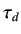
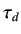

This chapter presents design and implementation of Self Tuning PI and PID controllers on Single Board Heater System done by
Mr. Vikas Gayasen.9.1
When a plant is wired in a close loop with a PID controller, the parameters-  ,
,  and  determine the
variation of the manipulated input that is given to the controller. This, in turn, determines the variation of the controlled
variable, when a set point is given. Suitable values of these parameters can be found out when plant transfer function is
known. However, with large changes in the controlled variable, there may be appreciable changes in the plant transfer
function itself. Therefore, it is needed to dynamically update the controller parameters according to the transfer function.
and  determine the
variation of the manipulated input that is given to the controller. This, in turn, determines the variation of the controlled
variable, when a set point is given. Suitable values of these parameters can be found out when plant transfer function is
known. However, with large changes in the controlled variable, there may be appreciable changes in the plant transfer
function itself. Therefore, it is needed to dynamically update the controller parameters according to the transfer function.
rokade
2017-04-23